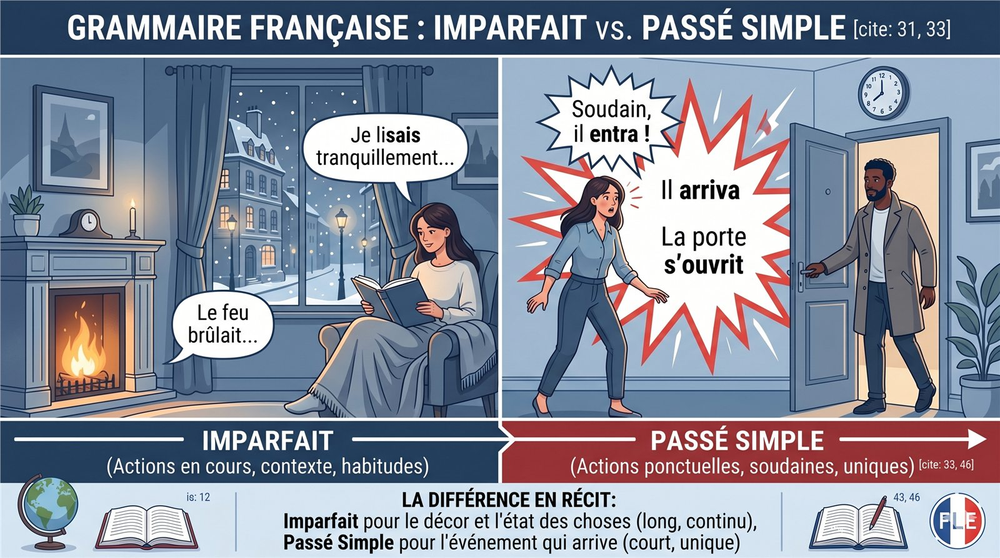
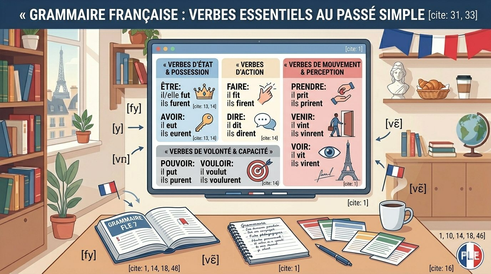

Définition
À quoi sert le passé simple ?
Le passé simple présente une action comme terminée, ponctuelle et importante dans la progression d’un récit. Il appartient principalement au français écrit.
Récit écrit
On le rencontre dans les romans, les contes, les biographies et les récits historiques.
Action ponctuelle
Il marque une action précise, terminée, souvent au premier plan de l’histoire.
Progression
Il fait avancer l’histoire : un personnage arrive, parle, découvre ou décide.
Registre littéraire
À l’oral, on utilise normalement le passé composé à la place du passé simple.
Exemple
Dans un texte écrit
Dans un registre courant
Idée essentielle
Passé simple = temps du récit écrit
Il ne faut pas forcément le produire à l’oral. L’objectif principal est de le reconnaître et de le comprendre quand on lit.
Contraste
Passé simple ou imparfait ?
Dans un récit, l’imparfait sert souvent à décrire le décor, l’ambiance ou une situation en cours. Le passé simple indique les actions principales qui font avancer l’histoire.
Visualisation
Les points rouges représentent les actions au passé simple : elles font progresser le récit.

Imparfait
Description, contexte, habitude, action en cours.
Passé simple
Action ponctuelle, événement principal, rupture dans le récit.
Formation
Les grandes familles de terminaisons
Pour ce niveau, l’objectif principal est la reconnaissance. Les terminaisons les plus importantes sont les familles en -ai, -is et -us.
1er groupe
parler, donner, entrer, regarder
Formes fréquentes
finir, prendre, mettre, dire, faire
Verbes essentiels
avoir, être, pouvoir, vouloir
| Famille | Terminaisons | Exemple |
|---|---|---|
| Verbes en -ER | -ai, -as, -a, -âmes, -âtes, -èrent | il parla · ils parlèrent |
| Famille en -IS | -is, -is, -it, -îmes, -îtes, -irent | il prit · ils prirent |
| Famille en -US | -us, -us, -ut, -ûmes, -ûtes, -urent | il eut · ils eurent |
| Radicaux spéciaux | vins, vint, vinrent / vis, vit, virent | il vint · il vit |
Conjugaisons
Modèles de conjugaison
Ces tableaux présentent les formes principales. En lecture, observez surtout les formes avec il / elle et ils / elles.
| Sujet | Parler | Donner | Entrer |
|---|---|---|---|
| je | parlai | donnai | entrai |
| tu | parlas | donnas | entras |
| il / elle / on | parla | donna | entra |
| nous | parlâmes | donnâmes | entrâmes |
| vous | parlâtes | donnâtes | entrâtes |
| ils / elles | parlèrent | donnèrent | entrèrent |
| Sujet | Finir | Prendre | Mettre | Dire | Faire |
|---|---|---|---|---|---|
| je | finis | pris | mis | dis | fis |
| tu | finis | pris | mis | dis | fis |
| il / elle / on | finit | prit | mit | dit | fit |
| nous | finîmes | prîmes | mîmes | dîmes | fîmes |
| vous | finîtes | prîtes | mîtes | dîtes | fîtes |
| ils / elles | finirent | prirent | mirent | dirent | firent |
| Sujet | Avoir | Être | Pouvoir | Vouloir |
|---|---|---|---|---|
| je | eus | fus | pus | voulus |
| tu | eus | fus | pus | voulus |
| il / elle / on | eut | fut | put | voulut |
| nous | eûmes | fûmes | pûmes | voulûmes |
| vous | eûtes | fûtes | pûtes | voulûtes |
| ils / elles | eurent | furent | purent | voulurent |
| Sujet | Venir | Tenir | Voir |
|---|---|---|---|
| je | vins | tins | vis |
| tu | vins | tins | vis |
| il / elle / on | vint | tint | vit |
| nous | vînmes | tînmes | vîmes |
| vous | vîntes | tîntes | vîtes |
| ils / elles | vinrent | tinrent | virent |
Reconnaissance
Les formes essentielles à mémoriser
Dans les textes, les formes les plus fréquentes sont souvent à la troisième personne. Il faut donc reconnaître rapidement les formes avec il / elle et ils / elles.

| Infinitif | Il / Elle | Ils / Elles | Sens courant |
|---|---|---|---|
| parler | parla | parlèrent | il a parlé / ils ont parlé |
| entrer | entra | entrèrent | il est entré / ils sont entrés |
| finir | finit | finirent | il a fini / ils ont fini |
| prendre | prit | prirent | il a pris / ils ont pris |
| faire | fit | firent | il a fait / ils ont fait |
| dire | dit | dirent | il a dit / ils ont dit |
| avoir | eut | eurent | il a eu / ils ont eu |
| être | fut | furent | il a été / ils ont été |
| venir | vint | vinrent | il est venu / ils sont venus |
| voir | vit | virent | il a vu / ils ont vu |
| pouvoir | put | purent | il a pu / ils ont pu |
| vouloir | voulut | voulurent | il a voulu / ils ont voulu |
Indices de lecture
Les marqueurs du récit
Certains mots annoncent souvent une action importante dans le récit. Ils aident à identifier le passé simple.
Exemple guidé
Les verbes s’ouvrit, entra et se cachèrent sont au passé simple. Ils présentent les actions principales du récit.
Registre courant
Transformer vers le passé composé
En français oral ou courant, le passé simple est généralement remplacé par le passé composé.
Règle pratique
Passé simple → avoir / être + participe passé
Elle prit → Elle a pris
Exemple 1
Passé simple
Passé composé
Exemple 2
Passé simple
Passé composé
Exemple 3
Passé simple
Passé composé
| Passé simple | Passé composé |
|---|---|
| il parla | il a parlé |
| elle entra | elle est entrée |
| ils finirent | ils ont fini |
| il prit | il a pris |
| elle fit | elle a fait |
| ils vinrent | ils sont venus |
| il fut | il a été |
| elle eut | elle a eu |
Lecture guidée
Exemple de récit
Voici un exemple pour observer la différence entre description à l’imparfait et actions principales au passé simple.
| Verbe | Temps | Fonction |
|---|---|---|
| était | imparfait | description |
| étaient | imparfait | contexte |
| apparut | passé simple | action principale |
| marcha | passé simple | action principale |
| regarda | passé simple | action principale |
| frappa | passé simple | action principale |
Attention
Erreurs fréquentes
Ces points aident à éviter les confusions les plus communes quand on lit ou transforme un texte.
1. Utiliser le passé simple à l’oral
Peu naturel :
Plus naturel :
2. Confondre imparfait et passé simple
faisait = contexte
arriva = action principale
3. Ne pas reconnaître les formes courtes
eut = a eu
fit = a fait
dit = a dit
vint = est venu
vit = a vu
prit = a pris